In this project I sucessfully programmed a rasterizer which can effectively carry out various procedures which reduce ailiasing in these images and thus, produce high quality graphical representations of shapes defined by a .svg file.
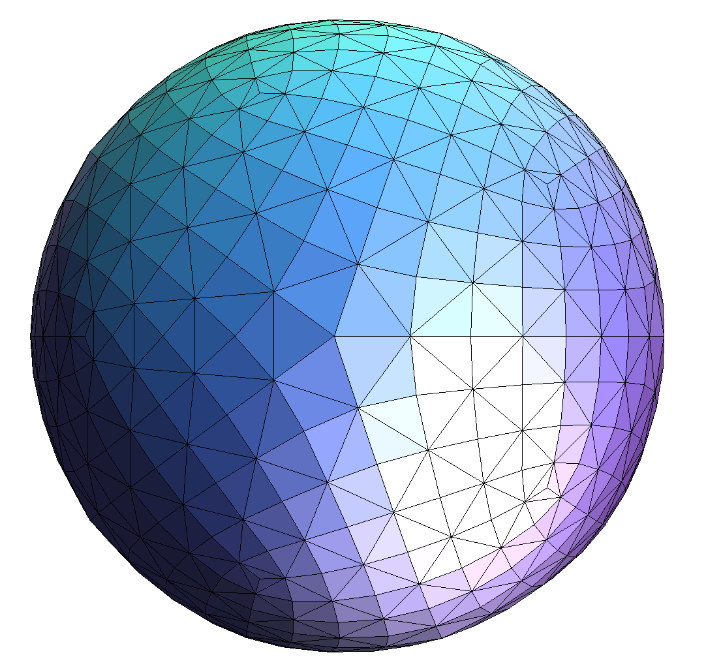
I implemented this part by creating a box around the triangle defined from its minimum and maximum x and y values such that the pixels in the trainagle will always be a subset of pixels in the box. Then I used the inside() function from triangulation.cpp, if the inside() function returns false for the center of the triangle, I then switched two of the vertices that are input into the inside function to change the direction of rotation around the 3 points. After making sure the winding order was correct, I then use the inside function on the center of each pixel represented by elements in the sample buffer and if the inside function returnes true, that sample is colored the color of the triangle.
This algorythim is no worse than one that checks each sample in the bounding box of the triangle because it does exactly that.
As you can see in the photo below, the triangles are rasterizing correctly but there is still alot of aliasing present due to the low sample rate.
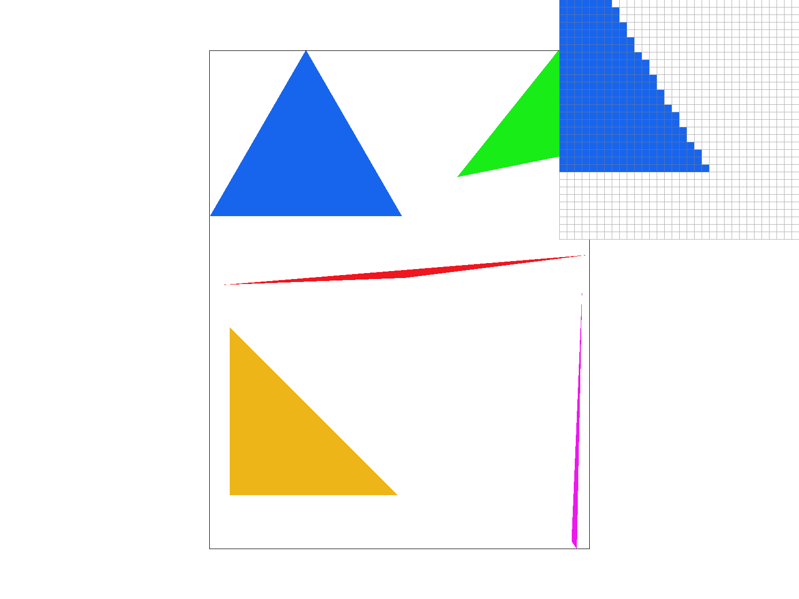
In this task I improved on the program that I had written in part 2 by implementing supersampling. I did this by enlargening the sample buffer by a factor of the sample rate. For each pixel/element in the buffer I used the inside test in the same way that I did in part 1 to determine whether it gets filled or not. After all of the triangles on the screen have been rasterized, the program then takes the average color of the elements in the sample buffer that make up each pixel and puts this color into the corresponding pixel in the final frame buffer
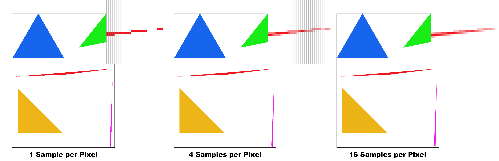
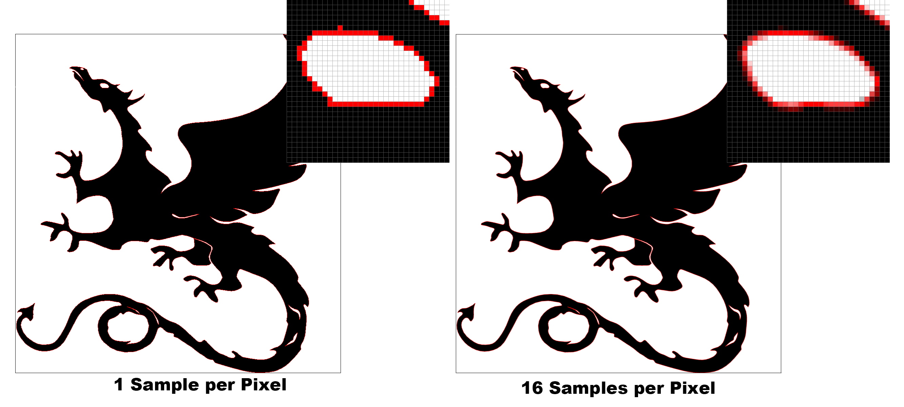
In this part I implemented rotation functions by perfoming these transforms with 3x3 matricies. The three transforms I implemented are rotate, scale and translate.
In the photo below got the robot to do a handstand. To do this I rotated the arms 90 degrees such that they are both pointing up. I then adjusted the positions of these arms so that they look attached to the body. I then rotated the legs 45 degrees outwards so that it looks like he is balancing. His head is slightly tilted too. After doing this I then rotated the whole robot 180 degrees so that he is upside down.
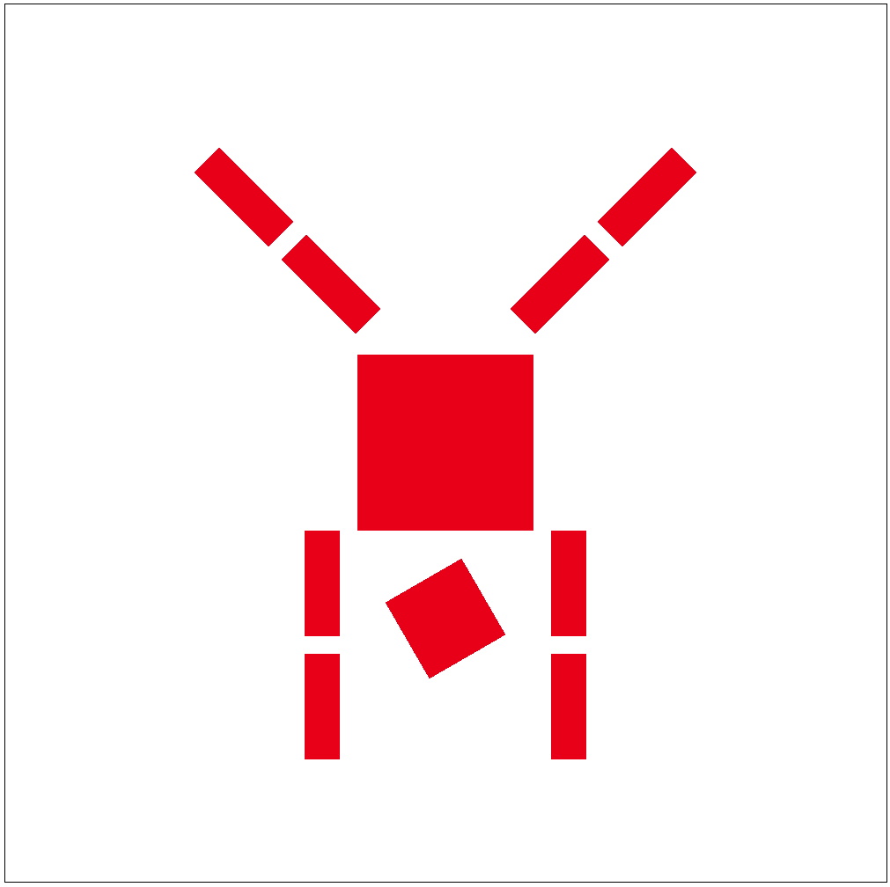
In this part implemented a function called rasterize_interpoloated_color_triangle() which accepts, the 3 verticies of a triangle and the three colors that are located on these verticies. For each sample in the triangle, the color is determined by its relative distance from the three verticies of the triangle. The closer it is to a specicific vertex, the more weight that that the vertex's color has in the sample. The photo below gives a good visual demonstration of how to calulate the barycentric coordinates for a point in a triangle. The further a sample is from a point, the smaller the area of the triagle will be between the sample and the other two verticies. The percentage of this area will be the percentage of the color in the pixel associated with the point that is excluded in the smaller triangle.
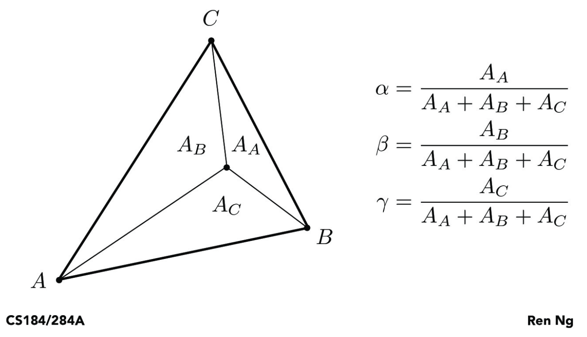
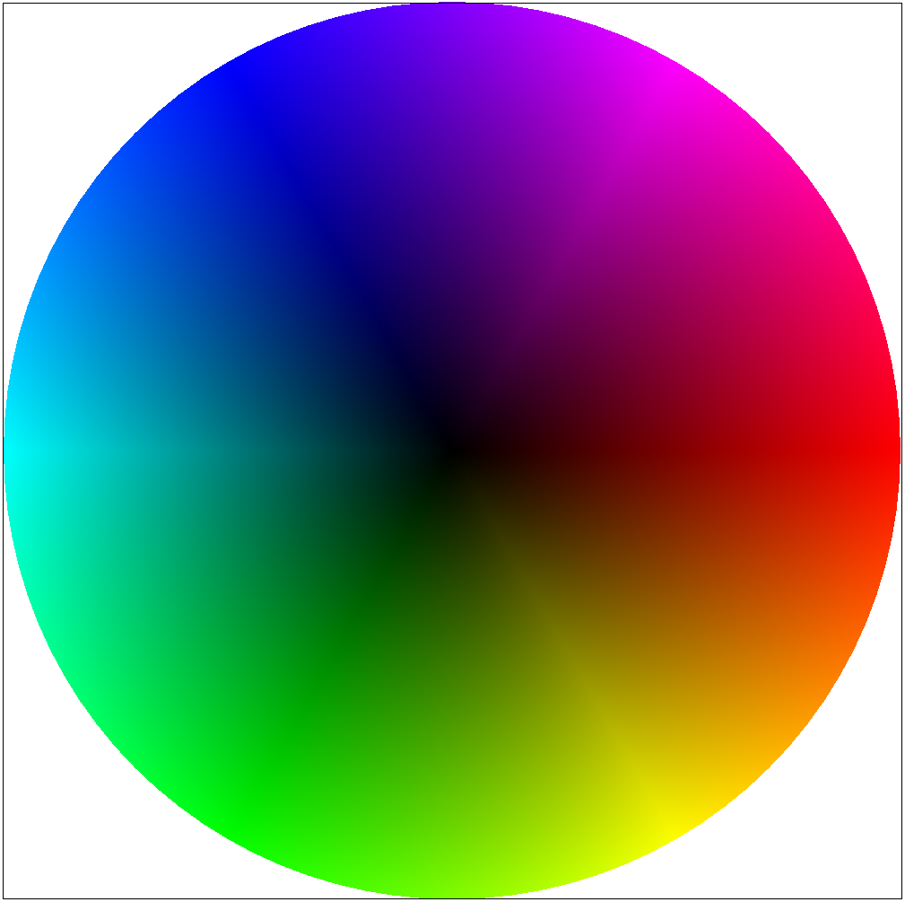
In this section of the project I implemented texture mapping using barycentric coordinates. For each point rasterized, I calulated the value of the barycentric coordinates of the sample in the triangle, retreived the location with the same barycentric coordinates in the texture. The only issue with doing this is that it is an extremely small possibiltiy that the pixels in the trianlge on the texture are in the same locations as the pixels in the sample buffer. To solve this I programmed two methods to manage this issue. The nearest pixel method chooses the nearest pixel to the equivelent location of the pixel in the sample buffer. While this method makes sense, it still produces images with aliasing. This was aided by bilinear sampling. With this method the colors in the surrounding 4 pixels are combined with a color being more dominant if the continous point calculated by the barycentric coordinates is closer to it. There is a big difference between the two methods when there is a large amount of high frequency change in the texture. This is because bilinear will colour each pixel with the bilinearlly interpolated value of the four surrounding pixels in the texure. This creates a much smoother looking image than the nearst pixel method as it smoothens high frequency change between pixels in the texture.
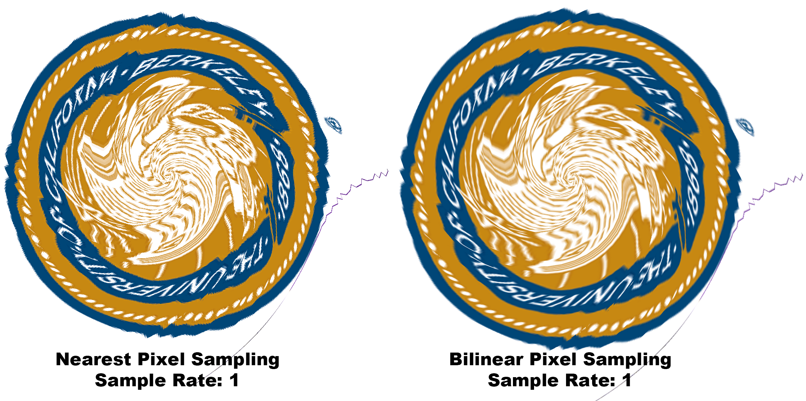
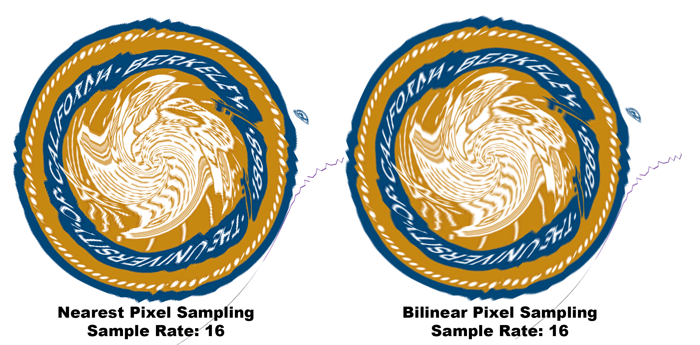
A mipmap is a data structure which stores a texture image at different resolutions, each of which have been pre-optimized so that a substantial amount of aliasing has been eliminated already at while not having much cost on the CPU at runtime. The first step of sampling a texture image is to determine the difference in distance between two adjacent barycentric co-ordinates in the texture image compared to the sample buffer. The larger this distance, the higher the mipmap level that is needed such that aliasing will be reduced due to small objects on the texture not getting randomly sampled causing random high frequency change in the image. These objects are blurred in the higher levels of the mipmap as they have already been sampled upon creation of the mipmap. This distance that determines the mipmap level increases as the size of the triangle in the sample buffer decreases in comparison with the size of the corresponding triangle in the texture image. The mipmap level is a non-negative integer. The height and width are 1 / 2(mipmap level) multiplied by the original height or width. This ensures that the photo has the same width/height ratio while also offering different resolutions of the photo.
If the lsm value is set to Level Zero, then the level zero mipmap is used in all cases and no level sampling takes place. If the lsm value is set to Nearest Level, then level sampling is conducted on every element in the sample buffer and the mipmap level that is sampled is the closest one to the calculated value of the mipmap level. If the lsm value is set to linear sampling then then each element in the sample buffer is level sampled with the texture map. The value of the color for that pixel is calulated using the two closest mipmap levels to the result of the level sampling. The color of the pixel entered into the sample buffer is calculated by the linear interpolation of the two different mipmap levels. With the distance used for this interpolation being the distance of the level sampling result from each mipmap level.
Linear sampling is the most expensive method to use. This is due to the fact that it doubles the amount of sampling that occurs in the texture. It also adds a linear interpolation function for each sample and has to calculate the recomended mipmap level aswell. Nearst level sampling is not as expensive as linear level sampling but is still more expensive than the level zero sampling method as the recomended level still has to be calculated. While the process of getting a level doesnt require alot of memory accesses, it stil contains a log function and a bunch of other calculations which slow down the processes involved in rasterizing each pixel marginally. While these different level sampling techniques are more expensive than not using mipmaps, they give great, computationallty efficient improvements to graphics in comparison to supersampling.
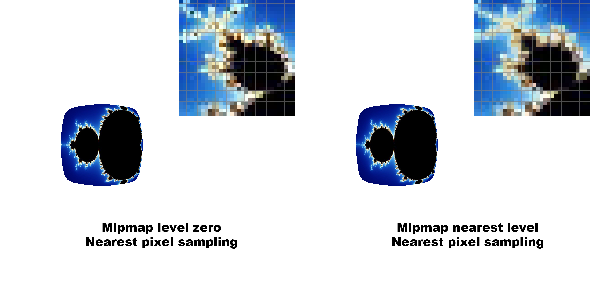
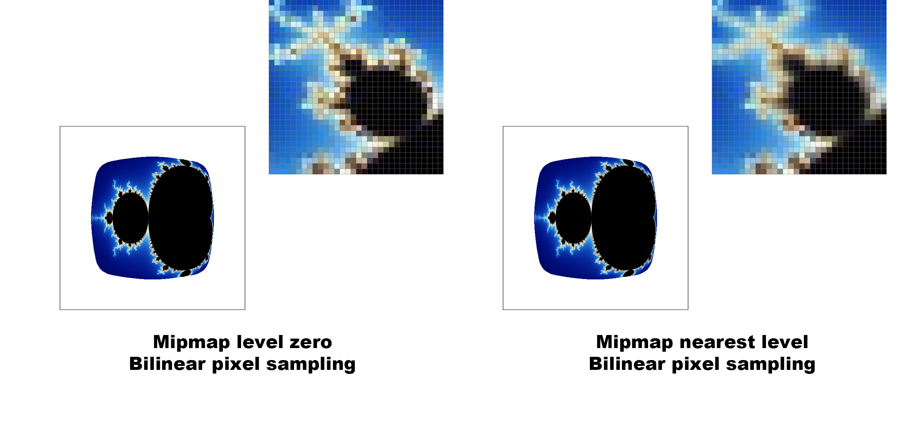